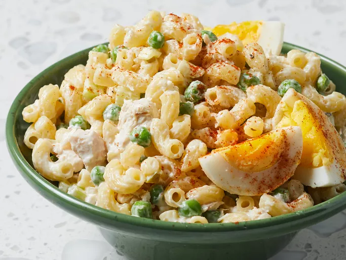

Odin Recipes
Tuna Macaroni Salad

A classic dish that is perfect for hot days in the summer! Whether as a light snack, or a full meal, you are sure to impress with this tasty tuna macaroni salad.
Though it requires 1 hour to chill before serving, this dish can feed up to 6 people whilst only taking up 10-15 minutes of your time!
Start by prepping all of your ingredients, as this is the most difficult part of this recipe.
Bring a large pot of water to boil, adding in a dash of salt if you like. Toss the elbow macaroni pasta in the water and cook.
Once the pasta is ready, drain the water before rinsing it under cold water.
Finally, we will add the rest of the ingredients into a large dish with the pasta, before leaving to chill!
Ingredients
- Macaroni:
300g of dried elbow macaroni pasta.
- Tuna:
One tin of canned tuna, drained. Can't go without this one!.
- Baby Peas
One tin of canned baby peas, drained.
- Hard-Boiled Eggs:
Three will do, cut into quarters, but feel free to add more.
- Sweet Onion:
Two tablespoons of chopped sweet onion.
- Celery:
Two stalks of celery, chopped nicely add some freshness to this dish.
- Mayonnaise:
We'll need around 200-250g depending on your preference.
- Seasoning:
You can add whatever you like! We reccomend:
One pinch of paprika and
A light sprinkle of salt and pepper.
Step by Step Process
- Step 1:
Start by preparing all the ingredients, including hard boiling the eggs, chopping up the vegetables, and draining the peas and tuna.
- Step 2:
Fill a large pot with water, and bring to boil after lightly salting it to your own preference.
- Step 3:
Add the macaroni pasta to the boiling water, allowing to cook for about 8 minutes. Keep an eye on it in order to avoid it boiling over completely. After cooking, drain the pasta before rinsing it under cold water to cool.
- Step 4:
Whilst the pasta cools, get yourself a large bowl to prepare the dish in. Then stir together the macaroni pasta, tuna, peas, celery, and onion.
- Step 5:
Next, mix in the mayonnaise and the seasoning. Stir quite vigorously so that all the ingredients can be distributed evenly throughout the dish.
- Step 6:
Finally, garnish with egg wedges. You can even sprinkle a bit more paprika on top! Then cover the dish with some foil, and allow it to chill in the fridge for at least 1 hour before serving.
- Step 7:
Enjoy!